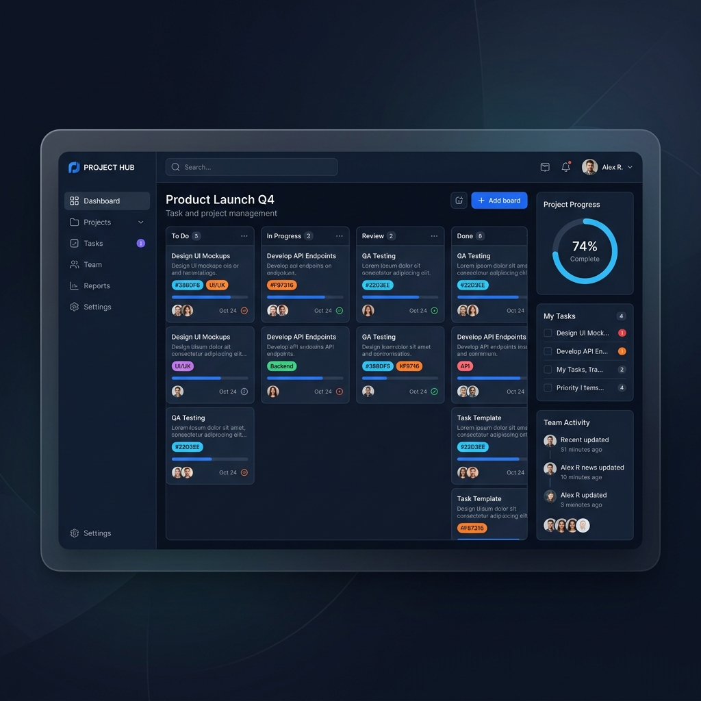
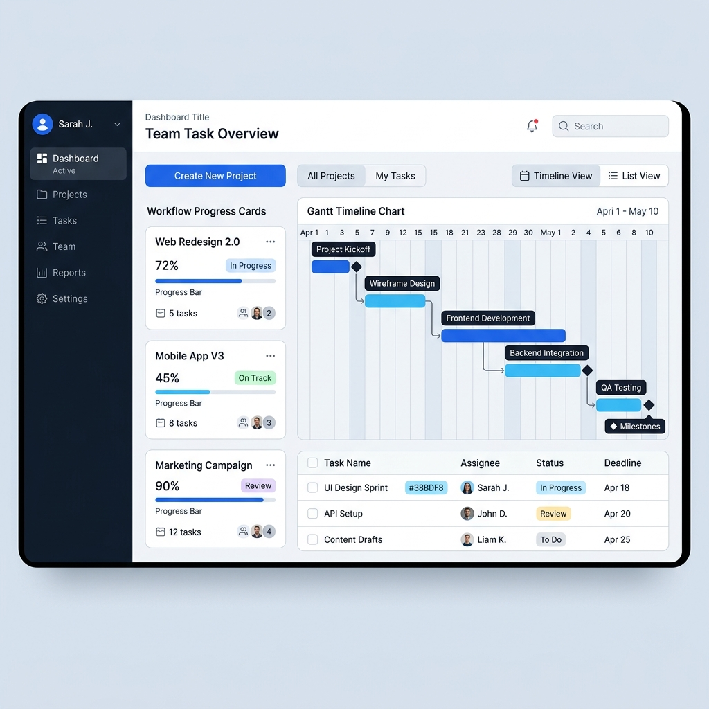

Fast Workflow
Simplify daily operations with quick-action task cards, customizable kanban boards, and automated priority queues.
TaskFlow helps modern teams manage complex projects, automate repetitive daily workflows, and achieve peak productivity with an intuitive, unified workspace.
Platform Uptime
Productive Teams
User Satisfaction

Streamline project management with intuitive tools engineered to eliminate friction and elevate team output.
Simplify daily operations with quick-action task cards, customizable kanban boards, and automated priority queues.
Stay aligned with real-time comments, direct task assignments, shared timelines, and instant project notifications.
Protect enterprise data with end-to-end encryption, role-based access permissions, and continuous automated backups.
Gain deep visibility into project speed, team performance metrics, and bottleneck alerts with automated reporting.
Eliminate manual overhead by setting up custom triggers, status updates, and automated recurring schedules.
Switch effortlessly between List, Kanban, Gantt timeline, and Calendar layouts to suit your team's preferred style.

TaskFlow was designed from the ground up to empower high-performing teams to organize work, minimize distractions, and deliver results faster than ever before.
Zero learning curve with clean, modern UX.
Keep everyone aligned across projects.
Prioritize goals and eliminate clutter.
Adaptable layouts built for any industry.
Discover how innovative companies around the world use TaskFlow to stay organized and achieve incredible momentum.
"TaskFlow made it much easier for our team to stay organized and focused. Our sprint completion rate increased by 35% in the first month!"
"The cleanest task management platform we've ever used. The automated notifications and real-time collaboration features are absolute game-changers."
"Switching our workflow to TaskFlow saved our remote team over 10 hours a week in unnecessary status update meetings."